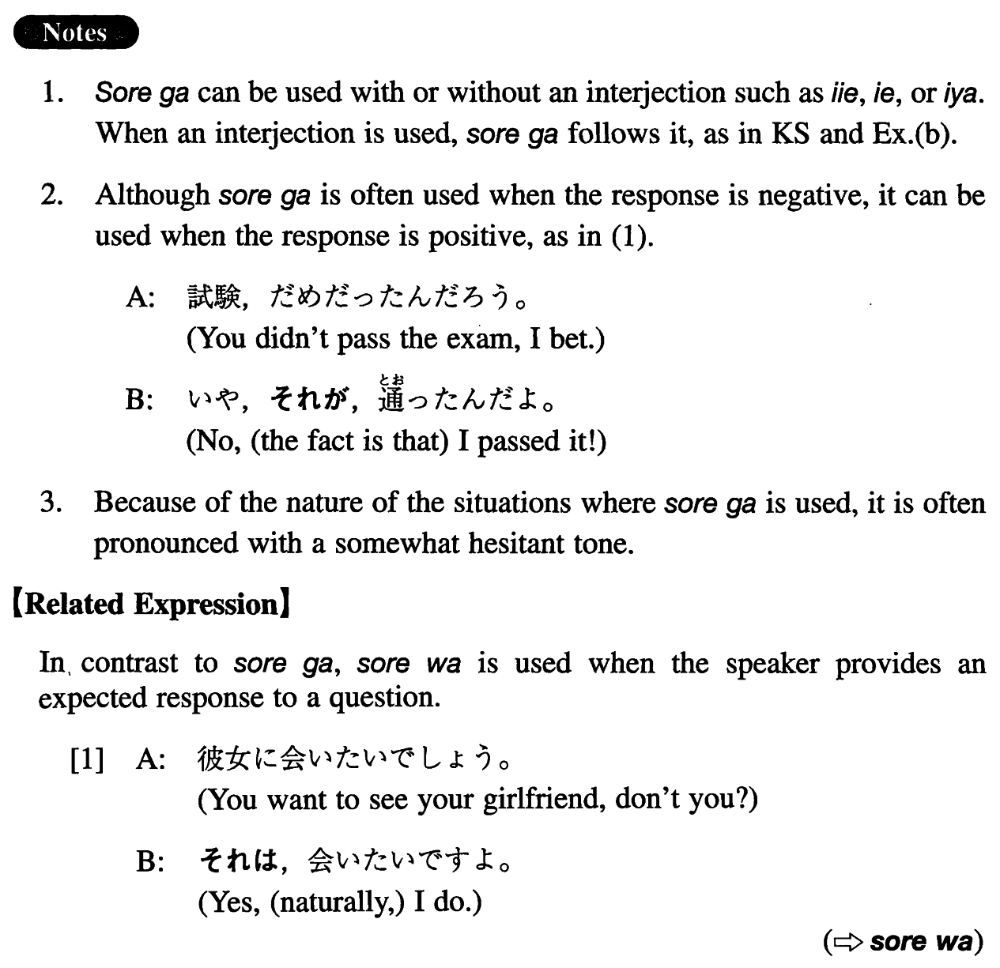

それが (I. 423)
- (ks).
- Ａ：奨学金がもらえそうですか。Ｂ：（いえ）それが難しそうなんです。
- A: Does it look like you can get a scholarship? B: Well, (no,) it looks difficult.
- (a).
- A: 試験、どうだった？B:それが、駄目だったんだ。
- A: How was the exam? B: Well, (I'm sorry to say this, but) it was no good.
- (b).
- A: 来年は日本で働くんですね。B: いや、それが行けなくなってしまったんです。
- A: You're going to work in Japan next year, aren't you? B: Well, no, it's turned out that I can't go.
- (c).
- A：彼女に会って話したんだろう。B: それが、合ったことは合ったんだけど、顔を見たら何も言えなくなってしまって。
- A: You met her and talked to her, right? B: Well, I did meet her, but when I saw her face, I couldn't say anything.
